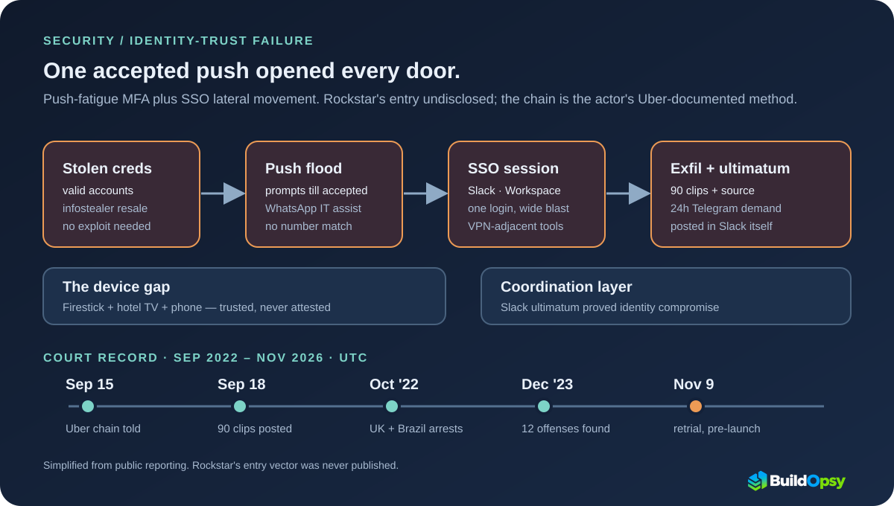

1. The Leak That Beat the Trailer
September 18, 2022 started as an ordinary Sunday for everyone except Rockstar Games. A newly registered GTAForums account named teapotuberhacker posted an archive: roughly ninety video clips of in-development Grand Theft Auto VI footage, plus fragments of source code. The clips showed an unfinished Vice City setting and a playable female protagonist, Lucia — details Rockstar had guarded for a decade.
The poster did not stop at the forum. Inside Rockstar's own Slack, employees found a message from the intruder: contact him on Telegram within 24 hours or source code would start releasing. That message is the detail that moves this file from a leak story to an identity story. Posting to a forum requires stolen files. Posting inside the victim's Slack requires the victim's identity.
| Date | What changed | System-design signal |
|---|---|---|
| Sep 15, 2022 | Uber discloses contractor breach via push fatigue | Documented playbook: approve-prompts plus a WhatsApp assist defeat context-free MFA. |
| Sep 18, 2022 | ~90 GTA 6 clips plus source fragments posted; Slack ultimatum | Presence inside the coordination layer proves identity compromise, not malware. |
| Sep 22, 2022 | UK arrest; laptop seized; breach continues from a hotel | Custody does not end access while unmanaged devices stay trusted. |
| Oct 19, 2022 | Brazil PF Operation Dark Cloud arrest | Same crew, three jurisdictions — shared tooling makes one playbook probative. |
| Aug 2023 | Jury finds 12 offenses committed; unfit to plead | Fact-finding without a criminal-intent verdict; findings still bite. |
| Dec 2023 | Indefinite hospital order | Sentence follows risk to the public, not just booked loss. |
| Mar 2026 | Smuggled-phone source-code claim, no evidence | Unverifiable claims stay open; they do not become second breaches. |
| Nov 9, 2026 | Narrowed retrial at Woolwich, barring postponement | Appeal subtracted six offenses without undoing the findings. |
2. The Architecture of Trust
Modern studios run on a small set of shared doors. One identity provider authenticates people; single sign-on carries that authentication into Slack, Google Workspace, VPN, and build systems; contractors receive the same doors as employees because the work demands it. Each convenience is a blast-radius decision wearing a productivity costume.
That is why one compromised identity is a master key rather than a single-room burglary. The same login that reads email also reads the chat system where incidents are coordinated, the workspace where documents live, and — through connected integrations — the source repositories and build artifacts behind them. Rockstar's Slack message proves the intruder held exactly this kind of key: presence inside the coordination layer itself.

3. The Attack Chain, Step by Step
Read this section with the diagram's warning attached: steps one and two below are the actor's documented method at Uber, described in Uber's September 19, 2022 security update — not a confirmed transcript of the Rockstar intrusion, whose exact entry vector was never published. The value is the pattern, because the pattern is what your own identity stack must survive.
Step one was valid accounts, not exploits. Uber disclosed that the attacker likely purchased an external contractor's corporate password on the dark web after infostealer malware on a personal device exposed it. No vulnerability was needed where credentials are for sale.
Step two was push fatigue with a human assist. The attacker logged in repeatedly, generating a two-factor approval request each time until the contractor accepted one. Reporting on the incident adds the social layer: after more than an hour of prompts, the attacker contacted the target on WhatsApp posing as Uber IT, saying the notifications would stop once a prompt was approved. Push MFA without number matching turns authentication into an endurance contest the human always loses.
The failure is structural, not personal. An approve-or-deny prompt asks a tired human to make a security decision with no context: no IP address, no device name, no number to match. Each prompt is an independent trial and the attacker needs exactly one success, so time favors whoever can keep clicking — and scripts never sleep. Number matching changes the game by binding the approval to a value shown only on the real login screen; FIDO2 hardware keys remove the human from the decision entirely by binding it to cryptographic origin. Both convert an endurance contest back into a verification.
Step three was lateral movement through trust, not through firewalls. From the contractor account the attacker reached other employee accounts, then G-Suite and Slack with elevated permissions — plus HackerOne, VPN-adjacent tooling, and internal finance systems. Each hop was authorized by the previous one. Nothing was broken into; everything was logged into.
4. The Firestick Problem: Identity Trusted, Device Never Attested
The strangest verified detail of the Rockstar intrusion is its hardware inventory. Kurtaj was on bail for the Nvidia and BT/EE hacks, under police protection at a Travelodge hotel, with his laptop confiscated. He carried out the breach with an Amazon Firestick plugged into the hotel television plus a mobile phone, and from there reached Rockstar's internal Slack.
Strip the absurdity and the mechanism is ordinary: centralized authentication never asked what device was asking. A session minted on an unmanaged, unattested endpoint carries the same trust as one minted on a managed workstation, because the identity layer authenticates the person and assumes the endpoint. Every SSO deployment that skips device posture for contractors and guests has already accepted the Firestick as a valid client. It just never pictured one.
5. A Multi-Country Trail
Lapsus$ operated like a franchise with no headquarters, and the docket shows it. In the UK, City of London Police arrested Kurtaj on September 22, 2022, days after the leak. In Brazil, the Federal Police's Operation Dark Cloud — opened in August 2022 over the December 2021 ConecteSUS and Health Ministry attacks — arrested its principal domestic suspect on October 19 in Feira de Santana, Bahia. The FBI pursued the American threads. Three jurisdictions, one loosely affiliated crew.
The crew's résumé explains why investigators across continents kept meeting the same handles. Uber's disclosure links the same actor to Microsoft, Cisco, Samsung, Nvidia, and Okta in 2022 alone; Brazilian police tied the domestic cell to attacks on the postal service, a car-rental firm, a Portuguese broadcaster, EA, and Globant alongside the health ministry. Identity-first crews reuse infrastructure, tooling, and people — which is exactly what makes one crew's documented playbook probative for another victim's undisclosed entry.
6. Impact, Cost, Recovery
Rockstar told the UK court the breach cost $5 million in recovery plus thousands of staff hours; Sky News separately reported $1.5 million in external help alone. Across the crew's victims the reported cumulative damage approached $10 million. The defense argued the record-breaking trailer views proved limited harm; the judge disagreed, citing real victims across Kurtaj's other hacks and his stated desire to keep hacking.
The legal arc matters as much as the invoice. Found unfit to plead, Kurtaj faced a jury asked only whether he committed the alleged acts: 12 offenses found, indefinite hospital order in December 2023. The Court of Appeal later ruled evidence of six earlier offenses inadmissible but left the findings intact — which is why November 9, 2026 at Woolwich Crown Court is a narrowed retrial, not a rehearing of everything. Kurtaj has since been assessed fit to plead after two years of treatment.
And the story is still moving. In March 2026, messages attributed to Kurtaj from a smuggled prison phone suggested the GTA 6 source code sits somewhere unreleased. Multiple outlets carried the claim while stressing the same caveat this file applies: no evidence accompanied it, and chaos is on-brand for the source. Treat it as a reported claim awaiting corroboration, not as a second breach.
7. Second-Order Effects
The industry response was not to mourn passwords but to demote the push prompt. Number matching, FIDO2 hardware keys, and push-attempt rate limiting moved from best practice to baseline in enterprise guidance after 2022 — each one a direct answer to a specific step of this chain. The docket itself carries the other lesson: UK arrests in 2022, a Brazilian arrest the same year, court findings in 2023, and a retrial in 2026. Crews outlive any single arrest, so controls must outlive any single crew.
Watch November with two clocks running. The retrial tests a narrowed record ten days before launch; the launch tests whether a four-year-old leak still matters against a finished game. Either outcome leaves the engineering lesson untouched: the perimeter moved to identity years ago, and most stacks finished the migration everywhere except enforcement.
8. What to Steal
First, require phishing-resistant MFA where sessions are valuable: FIDO2 hardware keys or passkeys for employees and contractors alike, number matching as the floor everywhere else. An approve button is not a second factor; it is a poll.
Second, rate-limit authentication attempts per account and per source. Model push-attempt ceilings in the token bucket calculator: a legitimate user never needs twenty prompts an hour, so the twenty-first should lock the flow and page a human, not wake the victim again.
Third, attest devices before trusting sessions from them. Managed-device posture for staff, conditional access tiers for contractors, and no silent equivalence between a workstation and a streaming stick.
Fourth, scope SSO blast radius by default. Collaboration tools should not inherit production-adjacent permissions through group nesting nobody reviews. Map which integrations each SSO app can reach, and prune quarterly.
Fifth, monitor the coordination layer as critical infrastructure. Anomalous Slack behavior — mass downloads, external forwarding, first-time admin actions at odd hours — deserves the same alerting as production anomalies. Rockstar learned of the intruder from inside its own chat; most companies would learn later.
Appendix A. Push-Budget Math
A legitimate user approves a handful of MFA prompts a day; an attacker sends dozens an hour. That asymmetry is a rate-limiting problem wearing an authentication costume, so model it like one. Give each account a small bucket — say three push attempts that refill one per day. Normal use never notices. A fifty-prompt flood exhausts the bucket in minutes, locks the flow, and pages IT instead of waking the victim again. Run the shape in the token bucket calculator with capacity 3, refill near zero, and offered load at attacker rates: the admitted count collapses while legitimate traffic passes untouched.
Apply the same counting to blast radius. Count group memberships, not applications: one SSO identity nested into admin groups across Slack, Workspace, VPN, and source control is four blast radii sharing one password. Quarterly recertification that asks "which of these does this contractor still need" is unglamorous and undefeated. The numbers above are illustrative budgets, not Rockstar telemetry — Rockstar never published its IdP configuration. The method transfers regardless.
9. The Postmortem Verdict
Three clocks ran in this story: ninety clips posted in a day, a $5 million recovery billed over months, and a court case still running four years later. Treating any one of them as "the Rockstar hack" misses the actual failure, which never involved the game at all.
The strongest part of the public record is its restraint: an earnings-call-grade invoice, a company-published attack chain, and court findings that separate proven acts from reported claims. The weakest part is the gap at the center — Rockstar's exact entry vector, still unpublished. Until that gap closes, the honest verdict is the narrow one: a trusted identity, once accepted, opened every door it was given. The fix is to stop giving every door to every identity.
The game was never the target. The identity was.
Sources and Method
Leak details, the Slack ultimatum, device inventory, court findings, costs, and the retrial date come from the linked reporting; the Uber attack chain comes from Uber's September 19, 2022 security update. Brazil details come from Federal Police reporting via Brazilian press. Rockstar's entry vector is undisclosed; the March 2026 source-code claim is reported without evidence. Trial timing is as scheduled and subject to postponement.
- The Guardian: British teenager behind GTA 6 hack receives indefinite hospital order (Dec 21, 2023)
- Uber: Security update on the September 2022 incident (Sep 19, 2022)
- WIRED: The Uber hack's devastation, MFA phishing detail (Sep 16, 2022)
- Polygon: Rockstar's $5M recovery figure and sentencing (Dec 21, 2023)
- Red Lion Chambers: November 9, 2026 Woolwich trial listing (Aug 5, 2026)
- Rockstar Games: GTA VI launches November 19, 2026 (Nov 6, 2025)
- g1: Federal Police arrest in Operation Dark Cloud (Oct 19, 2022, Portuguese)
- IGN India: March 2026 source-code claim report (Mar 10, 2026)